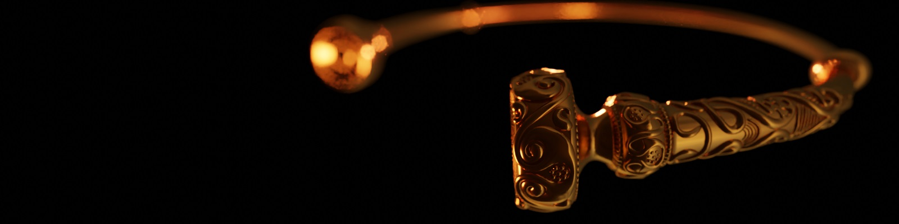
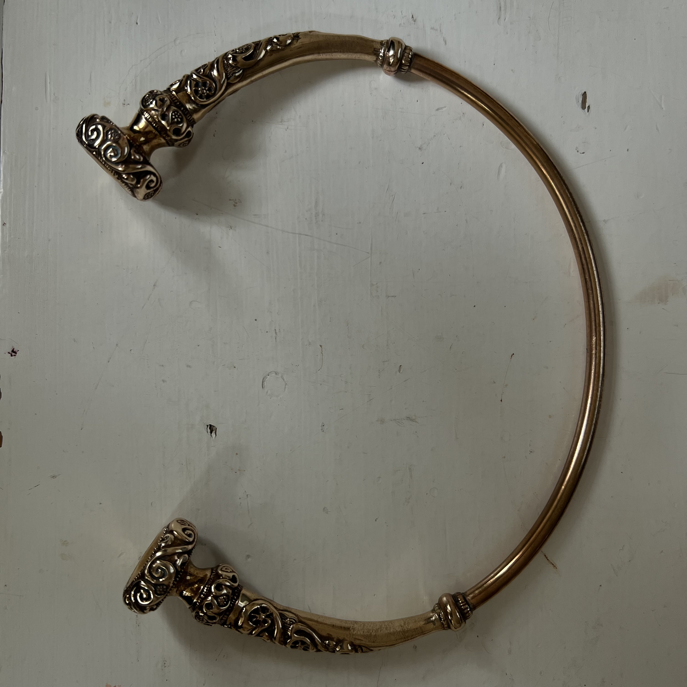
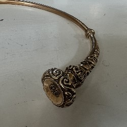
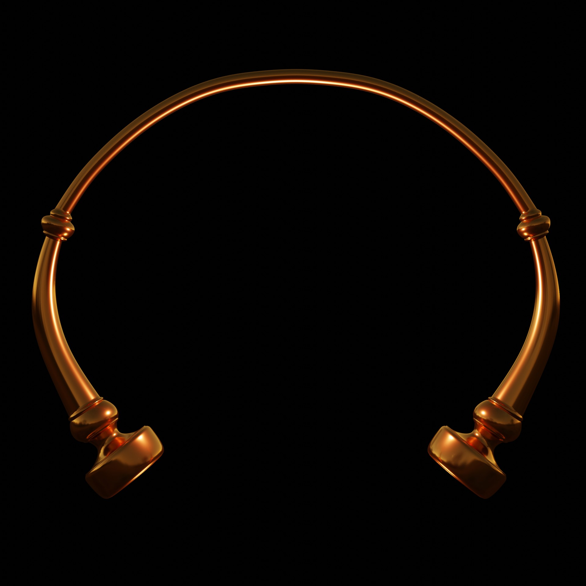
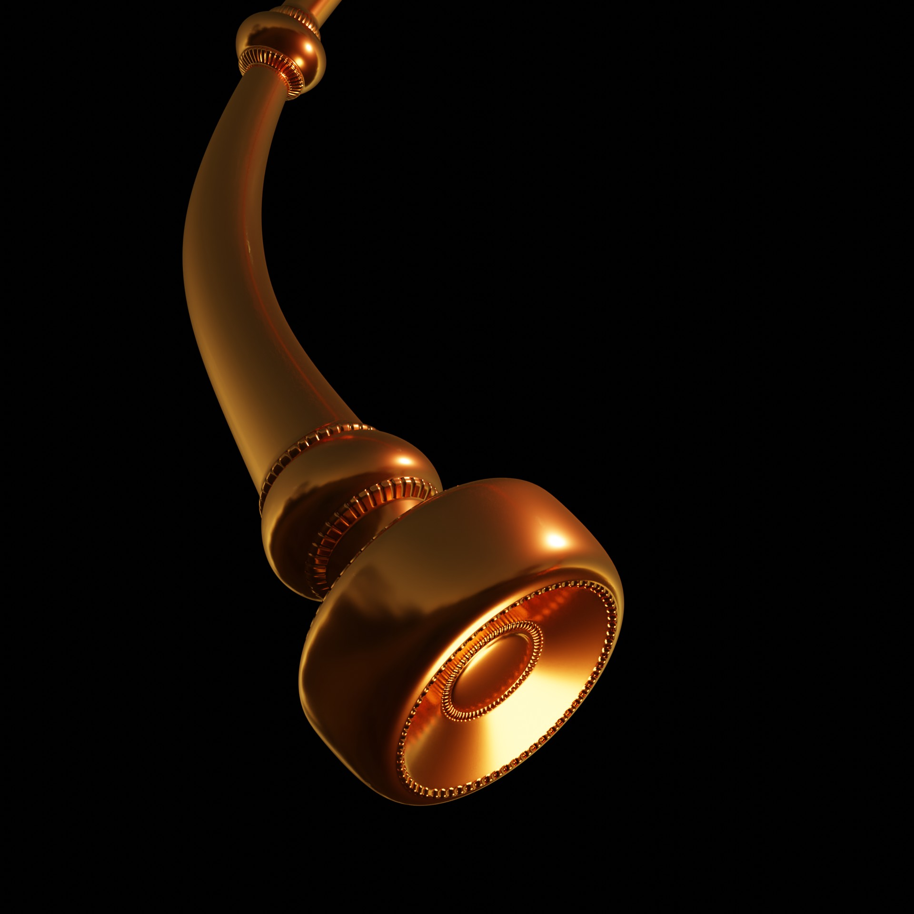
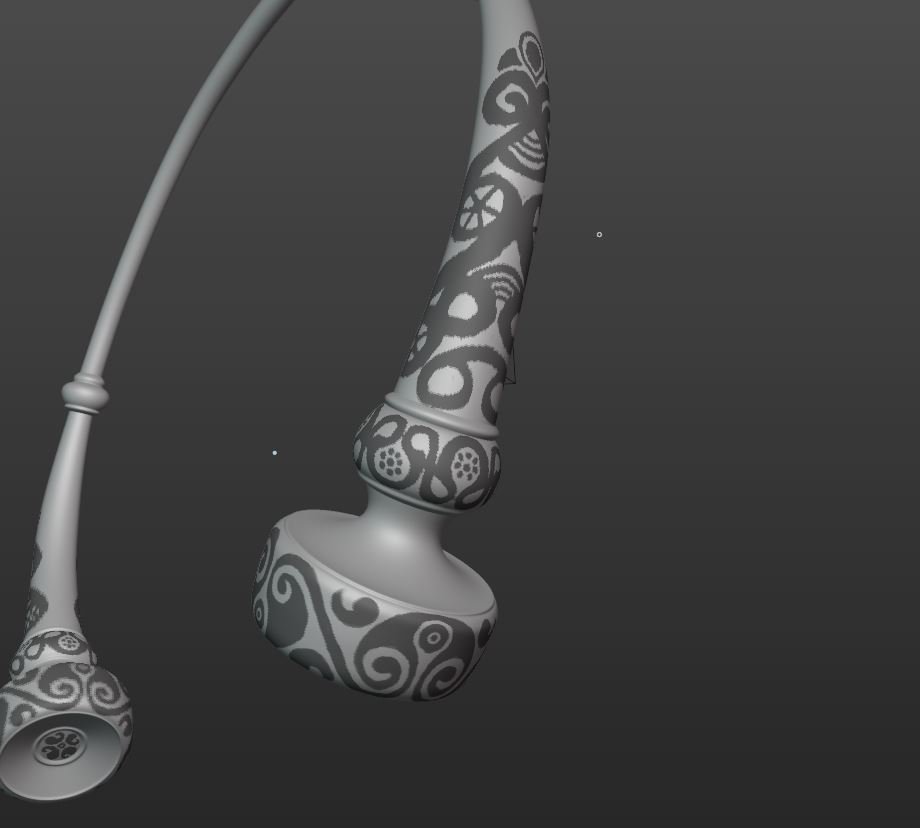
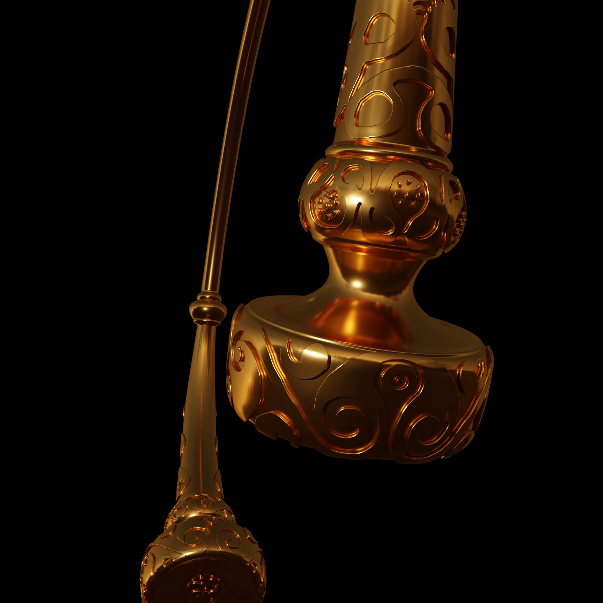
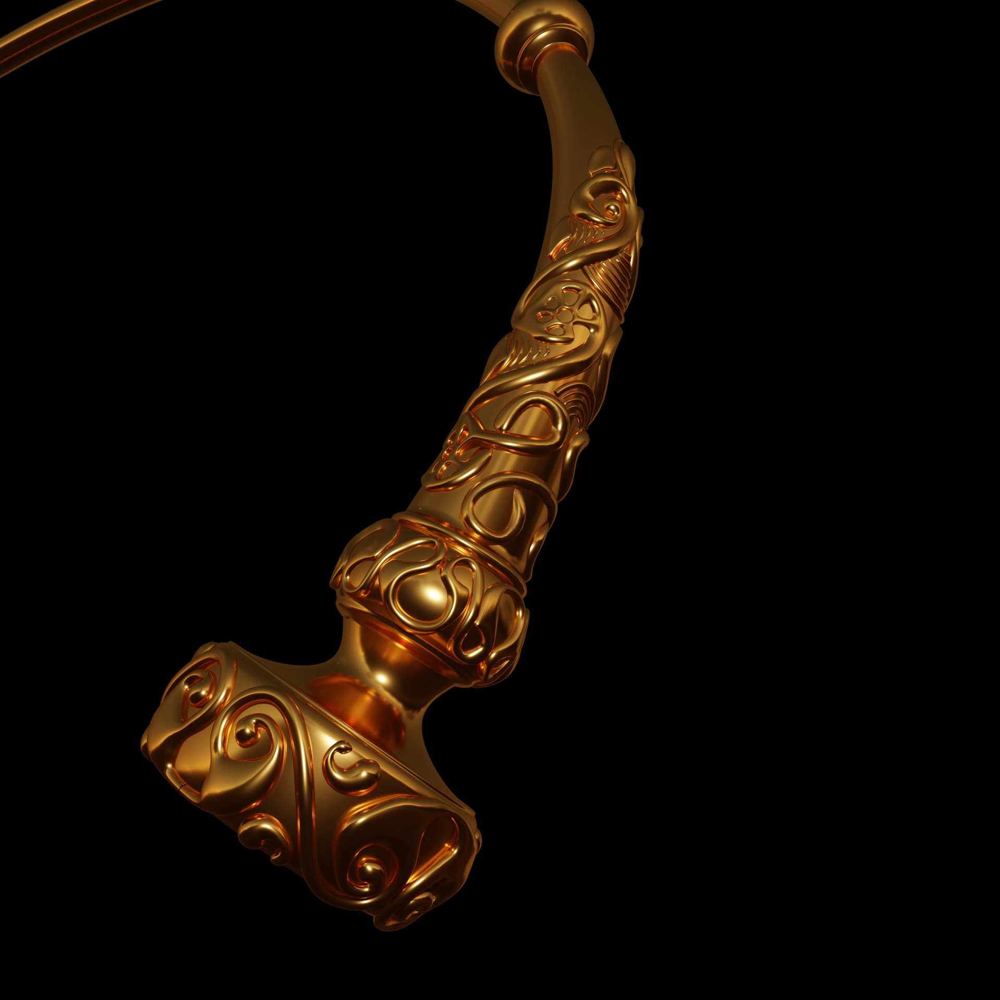

ONGOING
Waldalgesheim torc
goal
- Creating a 3D replica of a torc
- Adding realistic material to create patina look
about
Maybe most people will wonder about what a torc is. Well it is a piece of jewelery typical for european iron age. The piece I used as reference is from a 4th-century BC dated burial in Waldalgesheim, Germany. Since I really love the art style that established in middle europe during iron age I decided to create a digital replica.
The reference


The ring


The ornaments
My first idea was to sclupt the onamants but then I came across the mask extraction tool in Blender. So, I masked the ornament structure on the ring, extracted it an used the solidify modifier.


next
- Improve the material
- Creating a short video to show the torc in detail
- Adding it to a character?